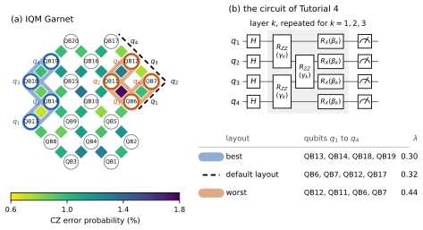
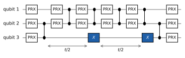
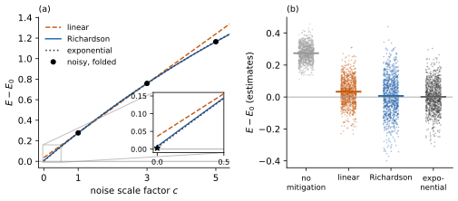
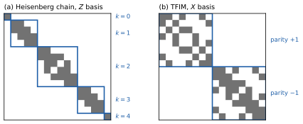
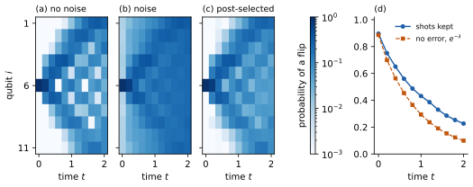

5 Reducing the effect of noise
\[ \newcommand{\ket}[1]{\left|#1\right\rangle} \newcommand{\bra}[1]{\left\langle#1\right|} \newcommand{\gate}[1]{\mathrm{#1}} \newcommand{\Tr}{\mathrm{Tr}} \]
In the previous chapters, noise was what made our estimates wrong: it shrinks expectation values (Section 2.7), it limits the number of Trotter steps (Section 3.7), and in Tutorial 4 it left the energy of the variational state far above what the ansatz could reach. In this chapter, we discuss how to reduce the effect of noise in NISQ computation without error correction: briefly with error suppression, and mainly with error mitigation.
By the end of the chapter, you should be able to tell error suppression, mitigation and correction apart; explain how zero-noise extrapolation and symmetry verification work, and how they trade bias for standard error; and judge whether a mitigated result is plausible.
5.1 Suppression, mitigation and correction
Dealing with noise is central to quantum computing. One natural way to reduce noise is to build better hardware, with fewer errors per gate; but much can also be done on the software side, i.e. in the way we design algorithms and run them on a given device. We group the software methods to reduce errors into three categories:
Definition 5.1 (Error suppression, mitigation and correction)
- Quantum error suppression changes how the device runs a circuit (e.g. in gate implementation or compilation), so that each shot suffers fewer errors.
- Quantum error mitigation leaves the errors of each shot as they are. It runs many shots, often of several modified circuits, and combines their outcomes in classical post-processing into an estimate of the noiseless expectation value.
- Quantum error correction encodes each logical qubit in many physical qubits, and detects and corrects errors during the computation (Section 1.1).
Suppression includes better calibrated pulses, compiling into fewer two-qubit gates, choosing the best qubits of a device, and dynamical decoupling (Section 5.2); it costs no extra shots, but it cannot remove all errors.
Mitigation includes readout-error mitigation and the rescaling of Section 2.7.2, and zero-noise extrapolation and symmetry verification, the two main methods of this chapter, as well as many more. An extensive review can be found in Cai et al. (2023). Mitigation needs no extra qubits, but it improves only estimates of expectation values, not the state on the device, and its cost in shots grows exponentially with the amount of noise (Section 5.3).
Correction can make a computation as reliable as needed, but it needs many more qubits, with error rates below the threshold (Section 1.1); in order to avoid all errors, error correction must be combined with fault-tolerant gate implementation, which is typically very expensive.
Error suppression techniques can be applied to any quantum circuit, so they combine naturally with both mitigation and correction. Combining error correction with mitigation is an active area of research, which may find applications on the first fault-tolerant devices (Dutkiewicz et al. 2025; Jeon and Cai 2026).
5.2 Error suppression
Error suppression changes how a device runs a circuit, but not what the circuit computes. When running a circuit on cloud hardware, some error suppression happens automatically in every run: providers calibrate the pulses of the gates regularly (Section 1.2.3). Compilers, in turn, can turn a circuit into as few native gates as possible, above all as few two-qubit gates, which cause most errors (Section 1.3.4). How hard they try is usually up to us: in Qiskit, the optimization_level of transpile sets it, as in Tutorial 3, where level 1 merges neighbouring single-qubit gates and level 0 does not. In this section, we look at two techniques that we control ourselves: choosing the qubits on which a circuit runs, and dynamical decoupling.
5.2.1 Choosing the qubits
On a superconducting chip, no two qubits are identical. Their \(T_1\) and \(T_2\), their readout errors, and the error rates of their gates differ. Furthermore, these values drift between calibrations, so they will likely be different on different days, and sometimes change over a period of a few hours (Section 1.2.3).
Figure 5.1 (a) shows the two-qubit gate error rates on IQM’s 20-qubit device Garnet, whose coupling graph is a square lattice (Figure 1.10). In these data, the error probability of a CZ ranges from 0.7% to 1.8%; on the device itself, the values change from one calibration to the next.
We summarise the noise that a circuit suffers on a device with the sum of the error probabilities of all the operations it uses (gates, waits and readouts): \[ \lambda = \sum_i \varepsilon_i , \tag{5.1}\] where \(\varepsilon_i\) is the error probability of operation \(i\), as in Equation 2.12. This quantity is called the circuit fault rate (Cai et al. 2023), and by Equation 2.12 a shot runs without errors with probability \(e^{-\lambda}\). It is the total of the error budgets of Section 2.6.3: \(\lambda \approx 0.25\) for the brick-wall circuit of Table 2.2 on a superconducting device. Since the error rates differ, \(\lambda\) depends on which qubits of the device play the roles of the qubits of the circuit, a choice called the layout. The layout must follow the coupling graph: where possible, qubits that share two-qubit gates in the circuit should be neighbours on the device, otherwise the compiler must add expensive SWAP gates (Section 1.3.6).

IQMFakeGarnet of iqm-client 36.0.0; fixed values, not the device’s current calibration). (a) The coupling graph, drawn as on IQM’s Resonance platform, with the error probability of each CZ on the diamond between its two qubits (its depolarising error and the relaxation of both qubits during the gate), and three layouts of the chain of qubits \(q_1\) to \(q_4\): the best (blue) and the worst (orange) of the 312 layouts that follow the coupling graph, counting both directions of each chain, and the default layout, which Qiskit chooses without error rates (dashed, drawn beside its qubits). (b) The circuit of Tutorial 4 and, below it, its circuit fault rate \(\lambda\) on the three layouts of (a). The compiled circuit has 18 CZs, 27 single-qubit gates and 4 readouts; the waits are not counted.
Figure 5.1 (b) gives \(\lambda\) for the circuit of Tutorial 4: 0.30 on the best layout of its 4-qubit chain and 0.44 on the worst. Placing the chain on QB1, QB2, QB3 and QB4, in the order of their numbers, does not follow the coupling graph, since QB2 and QB3 are not coupled: the compiler adds two SWAPs, and \(\lambda = 0.47\), more than on any layout that follows the graph.
The layout also sets the price of mitigation. Rescaling, which divides an estimate by the factor \(f \approx e^{-\lambda}\) by which noise shrinks it, costs \(e^{2\lambda}\) times as many shots (Section 2.7.2), 1.8 on the best layout and 2.4 on the worst, and the costs of the other methods of this chapter also grow exponentially with \(\lambda\) (Section 5.3). For deeper circuits, the gap between good and bad qubits grows exponentially too (Exercise 5.1). Suppression therefore comes first, and mitigation is applied on top of it.
By default, the IQM backend gives Qiskit no error rates, so the compiler picks a layout that follows the coupling graph but ignores the quality of the qubits. For the circuit of Tutorial 4, this default layout has \(\lambda = 0.32\) (Figure 5.1 (b)), close to the best one by chance: nothing keeps it from landing near the worst. To use the best qubits, choose them from the device’s current calibration data and fix the layout when compiling, for example with transpile(circuit, backend, initial_layout=[12, 13, 17, 18]) for QB13, QB14, QB18 and QB19, the best chain in Figure 5.1 (Qiskit numbers the qubits from 0).
Exercise 5.1 (Good qubits for a deeper circuit) In the circuit of Tutorial 4, each of the three bonds of the chain carries 6 CZs. On the best layout of Figure 5.1, the CZs of the three bonds have error probabilities of 0.7%, 0.9% and 1.0%; on the worst layout, 1.3%, 1.8% and 1.0%.
Compute the contribution of the CZs to \(\lambda\) on each layout, and the factor \(f \approx e^{-\lambda}\) by which the CZs alone shrink an expectation value.
A deeper circuit has ten times as many layers on the same chain, so 60 CZs on each bond. Compute \(f\) again on both layouts. How has the ratio of the two values of \(f\) changed, and how much of the signal is left on the worst layout?
5.2.2 Dynamical decoupling
In most circuits, some qubits are idle while gates act on others, and meanwhile they relax and dephase (Section 2.2.5): this also increases the fault rate of the circuit. Much of the dephasing comes from slow noise: the qubit frequency is off by a small amount \(\delta\) that we do not know and that changes from shot to shot, but hardly changes during one shot. Over an idle time \(t\), the qubit then picks up the unknown phase \(\delta t\) at a steady rate, and a steady drift can be reversed. Dynamical decoupling fills the idle time with the echo of Section 2.2.6 (Figure 5.2). An \(X\) pulse halfway through the idle time reverses the sign of the phase picked up so far, so the second half undoes the first, whatever \(\delta\) is, and a second \(X\) at the end undoes the flip. Long idle times are filled with several such pairs, or with other sequences of pulses whose product is the identity (Viola et al. 1999).

Dynamical decoupling only removes certain kinds of noise, like the part of dephasing due to a slow change in the qubit energy. In exchange, every additional pulse adds a small error of its own, so more pulses are not always better. Compilers can insert the pulses once the durations of all gates are known, and many sequences have been compared on superconducting devices (Ezzell et al. 2023). On IQM devices, dynamical decoupling is an option of the run (dd_mode), off by default.
5.3 The price of mitigation
In contrast to suppression or correction, error mitigation does not attempt to reduce or remove errors from any single shot. Instead, to mitigate errors we run multiple shots of the noisy circuit, often together with modified versions of it, and we combine their outcomes to compute a better estimate of the noiseless expectation value. This process always costs extra shots; in this section we explain why, and we discuss how to determine how many more shots are required.
Consider an experiment that estimates the expectation value \(\langle P\rangle\) of a Pauli string \(P\) from \(N\) shots, by the sample mean \(\bar s\) of their outcomes \(\pm 1\) (Equation 1.8). This estimate can be wrong in two ways (Section 2.7). Its bias is the difference between its average, if we repeated the whole experiment many times, and the value we want. Noise causes a bias, as it effectively changes the quantum state and thus the outcome probabilities of each measurement. Increasing the number of shots does not reduce the bias. The standard error measures how much the estimate fluctuates from one repetition of the experiment to the next. The standard error, denoted \(\sigma_{\bar s}\) in Equation 1.9, is the square root of the estimate’s variance, and it shrinks as \(1/\sqrt{N}\).
Error mitigation reduces the bias of an estimate, but the mitigation procedure also amplifies fluctuations: the mitigated estimate has a larger standard error, and needs more shots to reach the same precision. We first explore this bias-variance trade-off in the two simplest methods, which we met in the previous chapters.
5.3.1 Mitigating readout errors
Readout errors are the easiest to mitigate, because they act only at the end of the circuit and their rates, collected in the confusion matrix, can be characterised easily, as we discussed in Section 2.5 (in Tutorial 2, Exercise 2, you measure them on a simulated device). With the probabilities \(e_0 = p(1\mid 0)\) and \(e_1 = p(0\mid 1)\) of reading the wrong bit, the value \(\langle Z\rangle_{\text{read}}\) recorded on a single qubit follows Equation 2.10, and inverting it gives the mitigated value, \[ \langle Z\rangle = \frac{\langle Z\rangle_{\text{read}} - (e_1 - e_0)}{1 - e_0 - e_1} , \] a rescaling with an offset. For independent readouts on many qubits, the inverse of each qubit’s confusion matrix is applied to the measured probabilities of the bit strings, one qubit at a time. The mitigated estimate has no bias from readout errors, but the mitigation of each qubit multiplies the standard error by about \(1/(1 - e_0 - e_1)\). This method assumes that the readout errors of different qubits are independent, and that their rates have not changed since they were measured: correlated readout errors, or rates that have drifted (Section 5.2.1), leave a bias, and can even make it overshoot (Exercise 1.9, part d). Readout-error mitigation is the first step of rescaling and of ZNE; symmetry verification instead discards most readout errors with the other errors (Exercise 5.4).
5.3.2 Rescaling and the sampling overhead
Assume we want to measure an expectation value \(\langle P \rangle\) on a circuit where we know the noise only acts as global depolarising, shrinking all expectation values by a known factor \(f\) (Equation 2.9). Then, we know the sample mean \(\bar s\) of the outcomes will be an unbiased estimate of \(f\langle P \rangle\). We can thus reconstruct an estimate of \(\langle P \rangle\) by rescaling the average: \(\bar s / f\). (This was already discussed in Section 2.7.2.)
Rescaling rests on two assumptions, and each of them can fail. The first assumption is that the noise is global depolarising, so that every expectation value shrinks by the same factor \(f\). Real noise is not always well approximated by global depolarising noise: not every error changes every Pauli string, so expectation values shrink by different factors (Section 2.6.2), and dividing all by a single \(f\) leaves a bias. The second assumption is that we know the value of \(f\). Estimating it from the error rates, as \(e^{-\lambda}\), gives the probability that no error occurs. This tends to underestimate \(f\), because some errors leave a given Pauli string unchanged. When \(f\) is too small, dividing by it overcompensates, and the estimate overshoots past the true value. Both assumptions can be checked, and \(f\) can be measured instead of predicted, by running a similar circuit whose result is known. Due to these demanding assumptions, rescaling is often unreliable in practice, but (like the global depolarising model for noise) it is a useful archetype of error mitigation: its theoretical analysis is simple, and what we learn from studying it often extends to other error mitigation methods.
Dividing an estimate by \(f\) also multiplies the standard error by \(1/f\), so reaching the same standard error as the unmitigated estimate takes \(1/f^2\) times as many shots. This factor is the sampling overhead of an error mitigation method: the number of shots it needs to achieve a given standard error, divided by the number of shots that the unmitigated estimate needs for the same error. By Equation 2.12, \(f \approx e^{-\lambda}\), with the circuit fault rate \(\lambda\) of Equation 5.1, so the overhead of rescaling is \(e^{2\lambda}\): about 7 for \(\lambda = 1\), 400 for \(\lambda = 3\) and 22,000 for \(\lambda = 5\).
Rescaling is worth its overhead only when the bias matters. With few shots, the standard error of \(\bar s\) is larger than its bias, and dividing by \(f\) only makes the estimate fluctuate more. With many shots, the bias is the larger error, and the rescaled estimate is the better one (Exercise 5.2).
The sampling overhead changes for different error mitigation methods, but in the worst case all of them grow exponentially with \(\lambda\) (Quek et al. 2024). Mitigation therefore works only for circuits whose fault rate is not too large: it pushes the limits set by noise a little further, and can cover the “last mile” to a result the device alone cannot reach.
Exercise 5.2 (When rescaling pays off) Under global depolarising noise, a circuit has \(\langle P\rangle = 0.2\) and the shrinking factor \(f = 0.9\). The standard error of \(\bar s\) is \(\sigma/\sqrt{N}\), where \(\sigma^2 = 1 - f^2\langle P\rangle^2\) is the variance of a single shot (Section 2.7.1).
For \(N = 100\) and for \(N = 10^4\) shots, compute the bias and the standard error of the unmitigated estimate \(\bar s\) and of the rescaled estimate \(\bar s/f\). Which estimate would you trust more in each case?
Roughly how many shots are needed for the rescaled estimate to be the better one?
Hint
Compare the bias of \(\bar s\) with its standard error.
5.4 Zero-noise extrapolation
Zero-noise extrapolation (ZNE) is performed by running the same computation at several noise levels, fitting a curve to the results and extrapolating to zero noise (Temme et al. 2017; Li and Benjamin 2017). Noise levels cannot be reduced below what the physical device allows, but they can be increased on purpose, which is the opposite of error suppression (Section 5.4.1). Zero-noise extrapolation needs no model of the noise, only a way to increase it.
To describe this, we need a number for the noise level. Imagine that we could make every error of the circuit \(c\) times more likely; we call \(c\) the noise scale factor. We can then write \(E(c)\) for the unmitigated, noisy value of the expectation value we want (for example the energy) at that noise level. Running the bare circuit on the device as it is, we have \(c = 1\), and \(E(1)\) is the noisy value that we measure. The noiseless value that we want is \(E(0)\), which no device can reach. ZNE measures \(E(c)\) at a few scale factors \(c \ge 1\), fits a chosen curve to \(E(c)\), and extrapolates back to \(c = 0\), as in Figure 5.3 (a). The next two sections explain the two steps: how to scale the noise, and how to extrapolate.
5.4.1 Scaling the noise by folding
We cannot easily change the error rates of the device, but we can make the circuit longer without changing what it computes. On a digital device, the simplest way to do this is gate folding: replace a gate \(G\) by \(G G^\dagger G\) (Giurgica-Tiron et al. 2020). Without noise, \(G^\dagger G = I\), so the folded circuit computes the same thing as the original. On the device, the gate now runs three times, so it suffers three times the errors, if \(G^\dagger\) is as noisy as \(G\).
Folding the whole circuit \(U\) into \(U(U^\dagger U)^k\) therefore scales the noise by \(c = 2k+1\), that is, by 1, 3, 5, …. Folding only some of the gates, chosen at random, gives the factors in between: if the two-qubit gates cause most errors, folding \(g\) of the \(n_G\) two-qubit gates gives \(c \approx 1 + 2g/n_G\).
Folding scales the noise as intended only under two assumptions; where they fail, the extrapolated value keeps a bias.
- Folding scales only the errors of the gates. Readout errors are the same at every \(c\), so they must be mitigated separately (Section 5.3.1).
- Errors must add up, like the incoherent errors of Section 2.4. Coherent errors can instead cancel: if \(G = R_X(\theta)\) over-rotates, \(G^\dagger = R_X(-\theta)\) over-rotates in the opposite direction, and \(GG^\dagger G\) has the error of a single \(G\). Twirling (Section 2.4) turns coherent errors into Pauli channels, which do add up (Cai et al. 2023).
5.4.2 Extrapolating to zero noise
With estimates \(\hat E_j\) at the scale factors \(c_1 < c_2 < \dots < c_m\), we choose a model for \(E(c)\), fit it to the estimates, and evaluate it at \(c = 0\). Three models are common.
- Linear, \(E(c) = a + bc\). Through two points, its value at \(c = 0\) is \[ \hat E_{\text{lin}} = \frac{c_2\hat E_1 - c_1\hat E_2}{c_2 - c_1} , \] which for \(c = 1, 3\) is \((3\hat E_1 - \hat E_3)/2\).
- Polynomial, of degree \(m-1\) through all \(m\) points. This is called Richardson extrapolation, and the linear model is its case \(m = 2\). Its value at \(c = 0\) is a linear combination of the estimates, \[ \hat E_{\text{R}} = \sum_{j=1}^m \gamma_j\hat E_j , \qquad \gamma_j = \prod_{k\ne j}\frac{c_k}{c_k - c_j} , \tag{5.2}\] for example \(\gamma = (\tfrac{15}{8}, -\tfrac{5}{4}, \tfrac{3}{8})\) for \(c = 1, 3, 5\).
- Exponential, \(E(c) = Ae^{-bc}\), whose value at \(c = 0\) is \(A\). Global depolarising noise gives this form: it shrinks expectation values by \(f \approx e^{-\lambda}\) (Equation 2.9), and folding multiplies \(\lambda\) by \(c\), so \(E(c) = e^{-c\lambda}E(0)\). From two estimates, \[ \hat E_{\text{exp}} = \hat E_1\Big(\frac{\hat E_1}{\hat E_2}\Big)^{c_1/(c_2 - c_1)} , \] which for \(c = 1, 3\) is \(\hat E_1(\hat E_1/\hat E_3)^{1/2}\) (Endo et al. 2018).
The exponential model assumes that the noise pulls the value towards zero. Depolarising noise pulls an observable \(O\) towards \(\Tr[O]/2^n\), its value in the maximally mixed state of \(n\) qubits, which must therefore be subtracted first; for the TFIM, \(\Tr[H] = 0\). The model fails when the two estimates have different signs, or when one is within its standard error of zero, so we extrapolate the total energy rather than each of its terms, some of which are close to zero.
With more points than parameters, a least-squares fit replaces these formulas. Which model fits best depends on the noise. Under global depolarising noise, the exponential model is exact, the linear one leaves a bias of order \(\lambda^2\) (Exercise 5.3), and Richardson extrapolation with \(m\) points one of order \(\lambda^m\).
5.4.3 The price: amplified shot noise
The estimates at different scale factors come from different shots, so they are independent, and the variance of the linear combination Equation 5.2 is (Equation 3.5) \[ \mathrm{Var}(\hat E_{\text{R}}) = \sum_j \gamma_j^2\,\mathrm{Var}(\hat E_j) . \tag{5.3}\] The coefficients sum to 1, since a constant \(E(c)\) must extrapolate to itself, but \(\gamma_1 > 1\), since each of its factors is. So \(\sum_j\gamma_j^2 > 1\): the extrapolation amplifies the shot noise. For \(c = 1, 3, 5\), \(\sum_j\gamma_j^2 \approx 5.2\), so with the same number of shots at every point, the standard error grows by a factor of 2.3 (for \(c = 1, 3\), the factor is smaller: Exercise 5.3). More points remove more of the bias, but amplify the shot noise more; scale factors further apart amplify it less, but the model must then hold over a longer range.
The exponential model divides by \(\hat E_2\), which shrinks exponentially with \(\lambda\), so its amplification of the shot noise grows exponentially with \(\lambda\), as for rescaling. Its standard error, or that of any other fit, can be found by resampling: repeat the extrapolation many times on values drawn at random from Gaussians with the measured estimates as means and their standard errors as standard deviations, and take the standard deviation of the results.
Example. Figure 5.3 shows ZNE for the energy of the Tutorial 4 circuit, folded as a whole to \(c = 1, 3, 5\) (18, 54 and 90 CZs). Without shot noise (panel a), the energies are 0.277, 0.759 and 1.164 above \(E_0\), and the linear, Richardson and exponential extrapolations give 0.036, 0.008 and 0.004 above \(E_0\), against 0.003 for the noiseless circuit. The exponential model does best because the simulated noise is depolarising, so each term of the energy decays nearly exponentially with \(c\). With shots (panel b), mitigation removes almost all of the bias, but the standard deviation of the estimates grows from 0.05 to 0.08 (linear), 0.09 (exponential) and 0.12 (Richardson), and a third to a half of the mitigated estimates fall below \(E_0\). On balance, the mitigated estimates are still two to three times closer to \(E_0\) than the unmitigated one, in root-mean-square error.

Exercise 5.3 (Two-point extrapolation) We estimate an expectation value at the noise scale factors 1 and 3, with \(N\) shots each and the single-shot variance \(\sigma^2\) at both.
Show that the linear extrapolation to \(c = 0\) is \((3\hat E_1 - \hat E_3)/2\), and that its standard error is \(\sqrt{5/2}\,\sigma/\sqrt N\). How many shots in total does it need to reach the standard error \(\sigma/\sqrt N\) of an unmitigated estimate with \(N\) shots?
Suppose that the noise is global depolarising, so that \(E(c) = e^{-c\lambda}E(0)\). Show that, to second order in \(\lambda\), the linear extrapolation has the bias \(-\tfrac32\lambda^2E(0)\), against \(-\lambda E(0)\) without mitigation.
Hint
Use \(e^{-x} \approx 1 - x + x^2/2\).
In Figure 5.3, the energy at \(c = 1\) is 0.92 times the noiseless one. Which \(\lambda\) does this correspond to, and which bias does (b) predict for the linear extrapolation? Compare it with the figure.
5.4.4 Implementing ZNE
- Compile the circuit that prepares the state into native gates, and fold the compiled circuit, so that the folded gates are the ones that run.
- Put a barrier between the parts of each folded circuit: a compiler that sees \(U^\dagger U\) removes it, but it does not simplify across barriers.
- Add the basis changes of the measurement settings and the measurements, as in Tutorial 4. To run on a device, compile again with the layout fixed on a chain of coupled qubits (Section 5.2.1), so that the compiler adds no SWAP gates, which would not be folded. Estimate the expectation value and its standard error at each \(c\), with readout errors mitigated (Section 5.3.1).
- Extrapolate with one or more models, and find the standard error of the result, from Equation 5.3 or by resampling.
- Check the result: if the models disagree by more than their standard errors, the extrapolation is not reliable. Where possible, test the procedure on a small instance with a known answer and the same noise.
Tutorial 5 implements these steps in Qiskit.
In a VQE, ZNE is usually applied only to the final angles: inside the optimisation loop, it would multiply the cost of every step, while the optimiser only needs to compare energies.
5.5 Symmetry verification
The methods discussed so far (readout-error mitigation, rescaling and ZNE) can be applied to any circuit that estimates expectation values: they rely only on assumptions about the noise. Symmetry verification is the archetype of a different kind of method, which instead uses properties of the problem or of the algorithm. On each shot, it checks quantities that the circuit should conserve because of a symmetry of the problem: if one of them has changed, an error must have happened, and the shot is discarded.
5.5.1 Symmetries and quantum numbers
We met two conserved quantities in earlier chapters: the number of flipped qubits \(K = \sum_i (I - Z_i)/2\) of the Heisenberg model (Section 3.3), and the parity \(\Pi = X_1 X_2 \cdots X_n\) in the TFIM (Section 4.2). Both are observables that commute with the Hamiltonian.
Definition 5.2 (Symmetry, quantum number and sector) A symmetry of a Hamiltonian \(H\) is an observable \(S\) that commutes with it, \(SH = HS\). The eigenvalues \(s\) of \(S\) are called quantum numbers, and the eigenspace of each eigenvalue, made of all the states with \(S\ket{\psi} = s\ket{\psi}\), is a symmetry sector.
The name “quantum number” comes from physics, which labels eigenstates of a system by their conserved values, for example the number of electrons in a molecule, or the total angular momentum of an atom.
Two properties follow from \(SH = HS\):
- \(H\) maps each sector into itself: if \(S\ket{\psi} = s\ket{\psi}\), then \(S(H\ket{\psi}) = H(S\ket{\psi}) = s\,H\ket{\psi}\). In a basis of eigenvectors of \(S\), sorted by sector, the matrix of \(H\) is block diagonal (Figure 5.4).
- The quantum number is conserved: a gate \(G\) that commutes with \(S\) keeps each state in its sector, since \(SG\ket{\psi} = GS\ket{\psi} = s\,G\ket{\psi}\). This holds for the evolution \(e^{-iHt}\), and for any circuit whose gates all commute with \(S\). If a Trotter circuit approximating the evolution is made of gates \(G_i\) which, individually, commute with the symmetry, the whole circuit conserves quantum numbers. Remember: a Pauli rotation \(e^{-i\theta P/2}\) commutes with a Pauli string \(S\) if \([P, S] = 0\).
For the Heisenberg chain, the number of flipped qubits is the observable \[ K = \sum_{i=1}^n \frac{I - Z_i}{2} , \] which counts the 1s of a basis state: \(K\ket{x} = k\ket{x}\) for a bit string \(x\) with \(k\) ones. Its sector \(k\) is spanned by the \(\binom{n}{k}\) bit strings with \(k\) ones. Each bond term equals \(J(2\,\gate{SWAP} - I)\) (Exercise 3.1), so it moves 1s around but never creates or removes one. You can check that the bond gates of the Trotter circuit, the exponentials of the bond terms, also commute with \(K\) (Section 3.6); the single Pauli terms \(X_iX_{i+1}\) and \(Y_iY_{i+1}\) do not, only their sum does. In the circuit of Tutorial 3, each bond gate is the product of three rotations, \(R_{XX}R_{YY}R_{ZZ}\): \(R_{ZZ}\) conserves \(K\) on its own, but \(R_{XX}\) and \(R_{YY}\) conserve it only together.
For the TFIM, the parity \(\Pi = X_1X_2\cdots X_n\) squares to \(I\), so its eigenvalues are \(\pm 1\), and its two sectors have \(2^{n-1}\) states each. Each \(X_i\) commutes with \(\Pi\), and so does each \(Z_iZ_{i+1}\). Thus, the \(R_X\) and \(R_{ZZ}\) gates of the Trotterised adiabatic state preparation circuit (or of the HVA) conserve the parity (Section 4.2).

5.5.2 Post-selection on the quantum number
Suppose that the circuit starts in a state with the quantum number \(s_0\), and that all its gates, or groups of gates, commute with \(S\). Without noise, the final state lies in the sector \(s_0\). An error that does not commute with \(S\) can move the state to another sector, where the following gates keep it. If the quantum number can be read from the bits of each shot, a shot that gives a value other than \(s_0\) reveals that an error happened: for \(K\), measured in the \(Z\) basis, the quantum number of a shot is its number of 1s. Symmetry verification discards these shots, and estimates the expectation value from the others (Bonet-Monroig et al. 2018; McArdle et al. 2019). Keeping only the shots that pass a test is called post-selection.
Post-selection removes part of the bias, at the price of keeping fewer shots. To see how much, recall that a shot runs without errors with probability \(f \approx e^{-\lambda}\) (Equation 2.12), and suppose that a fraction \(d\) of the shots with errors is detected. The fraction of shots kept is then \[ p_{\text{keep}} = f + (1-f)(1-d) , \] and among them, a fraction \(f/p_{\text{keep}}\) ran without errors. We estimate an observable \(O\) whose noiseless expectation value is \(\langle O\rangle\). If \(\langle O\rangle_u\) is its average over the shots with undetected errors, the post-selected estimate averages to \[ \langle O\rangle_{\text{ps}} = \frac{f\langle O\rangle + (1-f)(1-d)\langle O\rangle_u}{p_{\text{keep}}} , \tag{5.4}\] so its bias, \((1-f)(1-d)\big(\langle O\rangle_u - \langle O\rangle\big)/p_{\text{keep}}\), comes only from the undetected errors. The price is that only \(p_{\text{keep}}N\) of the \(N\) shots are kept and used for computing averages, so the variance of the estimate grows by a factor \(1/p_{\text{keep}}\).
In the best-case scenario, every error is detected, \(d = 1\). Then, the estimate has no bias, and the sampling overhead is \(1/f \approx e^{\lambda}\). Compared to the overhead \(e^{2\lambda}\) of rescaling, this overhead of symmetry verification is its square root. The fraction of discarded shots, \((1-f)d\), is also a measured lower bound on the probability of an error, a useful check on the error budget.
Example. Figure 5.5 repeats the light cone of Figure 3.6 for a Heisenberg chain of 11 qubits, now with the depolarising noise of Tutorial 4 and readout errors \(e_0 = 1\%\) and \(e_1 = 2\%\). After 10 Trotter steps, the circuit has 300 CZs (compiled with optimization_level=2), and \(\lambda \approx 2.3\). We measure only in the \(Z\) basis, with 4000 shots at each time. Without mitigation (panel b), errors create flips everywhere: at \(t = 2\), a shot shows 2.5 flipped qubits on average instead of one, and the probabilities of finding the flip on each qubit are off by 0.14 on average. The same shots give \(K\) for free, and keeping those with exactly one 1 brings the cone back (panel c): the error at \(t = 2\) falls to 0.02. What remains comes from undetected errors, such as \(Z\) errors, which change the phases of the state but not the number of flips.
Panel (d) shows the price. The fraction of shots kept falls from 0.90 at \(t = 0\), where only readout errors act, to 0.23 at \(t = 2\), so at \(t = 2\) the variance is 4.4 times larger than with all shots; rescaling, even with a known \(f\), would cost \(e^{2\lambda} \approx 100\). The gap between the two curves of panel (d) is the fraction of shots with undetected errors, \((1-f)(1-d)\).

Exercise 5.4 (Post-selection against readout errors) The circuit of Figure 5.5 ends with one flipped qubit among \(n\). Suppose that its gates are perfect, and that the readout of each qubit reports the wrong bit with probability \(e\), independently.
Show that every shot with exactly one readout error is discarded by post-selection on one flipped qubit. Which shots with two readout errors are kept, and what do they report?
Show that the fraction of shots kept is \((1-e)^n + (n-1)e^2(1-e)^{n-2}\).
For \(n = 11\) and \(e = 1\%\), compute the fraction of shots kept, and compare it with panel (d) of Figure 5.5 at \(t = 0\). Which fraction of the kept shots report the flip on a wrong qubit, and which fraction of all shots have at least one readout error?
5.5.3 Implementing symmetry verification
- Find a symmetry \(S\) of the problem that every gate of the circuit conserves, or every group of gates, such as the \(R_{XX}R_{YY}\) of a Heisenberg bond, and the quantum number \(s_0\) of the initial state. Check the gates of the circuit before compiling: the native gates of the compiled circuit need not conserve \(S\) one by one.
- For each measurement setting, check whether \(S\) can be read from its outcomes, that is, whether \(S\) is diagonal in the measured basis. A Pauli string, such as the parity, can be read in a measurement setting that agrees with it wherever it is not \(I\) (Definition 3.5), as the product of the outcomes \(\pm 1\) on those qubits. The settings in which \(S\) cannot be read are used with all their shots.
- For each shot of the other settings, compute the quantum number from its bits, and keep the shot if it equals \(s_0\).
- Estimate the observable from the kept shots, with the standard error for their number, \(N_{\text{kept}}\) instead of \(N\) (Equation 1.9).
- Report the fraction of shots kept: it sets the price in shots (Section 5.5.2).
Tutorial 5 implements these steps in Qiskit.
Post-selection needs no extra circuits, so in a VQE it can also be used inside the optimisation loop. Other methods can be applied on top: ZNE, for example, extrapolates post-selected estimates as well as plain ones.
5.5.4 Verifying the energy of the TFIM
For the VQE of Tutorial 4, the symmetry is the parity: the circuit starts in \(\ket{+\cdots+}\), with parity \(+1\), and every gate of the HVA conserves it. But the parity can only be read in the \(X\) setting of the TFIM, where each shot gives the signs of all \(X_i\), and \(\Pi\) is their product (Figure 3.3): a shot passes if it has an even number of 1s. In the \(Z\) setting, which gives the bond terms, \(\Pi\) is not diagonal, and the shots carry no information about it, so only the field terms can be verified. The check catches the errors that anticommute with \(\Pi\), such as \(Z\) or \(Y\) on one qubit. An \(X_i\) error commutes with \(\Pi\), so it goes undetected, and it flips the signs of \(Z_{i-1}Z_i\) and \(Z_iZ_{i+1}\): it changes exactly the bond terms that we cannot verify.
Example. For the circuit of Tutorial 4, the check discards 6% of the shots of the \(X\) setting, and the bias of the field terms falls from 0.073 to 0.040. The bond terms keep their bias of 0.20, so the bias of the energy only falls from 0.277 to 0.244.
An entangling circuit before the measurement can verify the bond terms too. On two neighbouring qubits, \(Z_iZ_{i+1}\) and \(X_iX_{i+1}\) commute, and a CNOT from qubit \(i\) to \(i+1\) followed by a Hadamard on qubit \(i\) turns them into \(Z_{i+1}\) and \(Z_i\), so one shot gives both signs. Two such settings, one on the pairs \((1,2)\), \((3,4)\), … and one on the pairs \((2,3)\), \((4,5)\), …, with unpaired qubits measured in the \(X\) basis, give every bond term, and in each shot the parity, as the product of the signs of the \(X_iX_{i+1}\) of the pairs and the \(X_j\) of the unpaired qubits. These two settings replace the \(Z\) setting, at the cost of one more setting and one noisy CNOT per pair, and the \(X\) setting still gives the field terms. For the circuit of Tutorial 4, the bias then falls to 0.17, and not further, because \(X\) errors still escape the check.
Symmetry verification is therefore not always available: many circuits conserve no symmetry (a hardware-efficient ansatz (Section 4.3.3), for example, breaks the parity of the TFIM), and the measurement may reveal the symmetry in some settings only. Symmetries also differ in how many errors they catch: the number of flipped qubits keeps the state in one sector of \(n\) states out of \(2^n\), 11 out of 2048 for our chain, while the parity only splits the states into two halves (Exercise 5.5).
Exercise 5.5 (Strong and weak symmetries) We compare two checks: the number of flipped qubits \(K\) of a Heisenberg chain with one flip, read in the \(Z\) basis, and the parity \(\Pi\) of the TFIM, read in the \(X\) basis.
Just before the measurement, one qubit suffers an error \(X\), \(Y\) or \(Z\), each with probability \(1/3\). With which probability does each check detect it?
Now two different qubits each suffer such an error, independently. Show that the parity check detects the pair with probability \(4/9\). With which probability does the check of \(K\) detect it, if neither error hits the flipped qubit?
After many errors, the state is close to a random state of the \(n\) qubits. With which probability does it pass each check, for \(n = 11\)?
5.6 Reading a mitigated result
A mitigated value is the output of a model and of post-processing, and it should be read with both in mind. Five questions help.
- Does it come with a standard error that includes the amplified shot noise (Equation 5.3, or the shots kept)? Without one, it cannot be judged.
- Which assumptions are made on the noise model? Are these assumptions meant as approximations, or are they exact? For ZNE, what fit is used, and how is it justified? For rescaling, where does \(f\) come from?
- For post-selection, which fraction of the shots was kept? Can we estimate which fraction of the errors might have gone undetected?
- Does the error-mitigated estimate break a bound that the true value satisfies? The noisy state is still a state, a mixed one, so its energy needs to satisfy the variational bound (Equation 4.1). A mitigated energy is a rescaled estimate or an extrapolation, and need not satisfy it: an energy below \(E_0\) after mitigation (Exercise 4.2) is amplified shot noise, as in Figure 5.3, or an overshoot, as when rescaling divides by too small an \(f\) (Section 5.3.2).
- Was the method tested and validated on an instance with a known answer and the same noise?
5.7 Other methods
Many other methods exist; Cai et al. (2023) reviews most of the established methods. Some of the most popular include:
- Probabilistic error cancellation (PEC) undoes the noise of each gate on average, by inserting random operations with positive and negative weights (Temme et al. 2017); it needs an accurate noise model, learned from the device.
- Twirling (Section 2.4) does not remove errors, but makes them simpler to model, which PEC needs and which helps ZNE (Section 5.4.1).
- Purification methods suppress the contribution of errors by comparing the noisy state with itself: virtual distillation (Huggins et al. 2021; Koczor 2021) uses several copies of the state, and echo verification (O’Brien et al. 2021, 2023) runs the circuit forwards and then backwards on a single copy.
- Learning-based methods learn the relation between noisy and noiseless values on circuits that can be simulated classically (Czarnik et al. 2021).
5.8 Further reading
Cai et al. (2023) is the main review of error mitigation, with the circuit fault rate and the sampling overhead used in this chapter. Kandala et al. (2019) applied zero-noise extrapolation to VQE on a superconducting device, scaling the noise by stretching the pulses, and Kim et al. (2023) used it on circuits of 127 qubits. Software packages such as Mitiq (LaRose et al. 2022) implement several of these methods for circuits written in different SDKs.